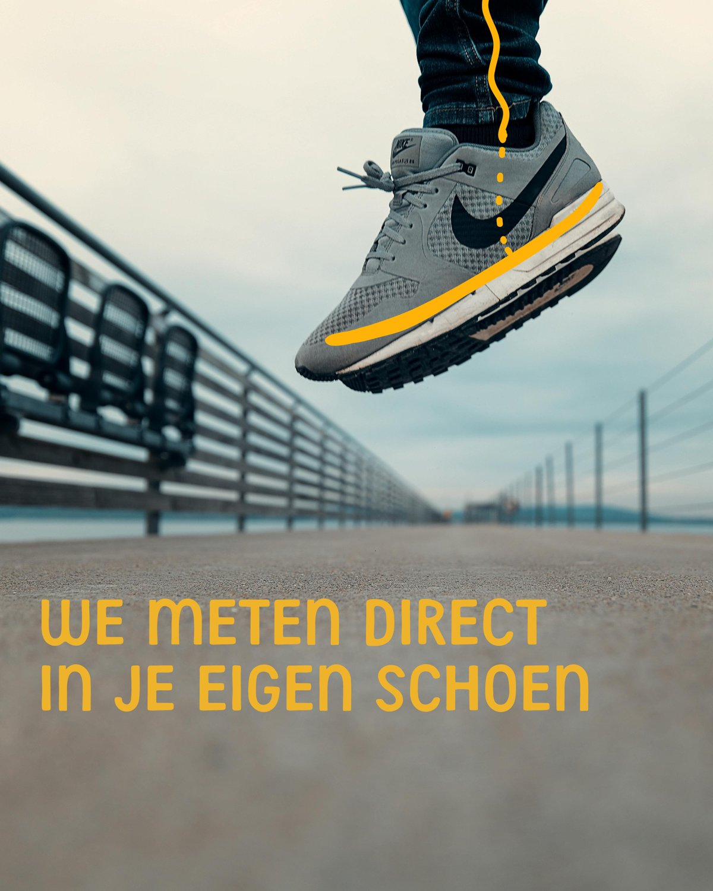

Podotherapie
Onderzoek en behandeling van voet- en houdingsklachten, afgestemd op uw situatie.
Lees meer
Bij VoetSelect Podotherapie staan persoonlijke aandacht en deskundige behandeling centraal. Van klachten tot preventie — wij denken met u mee.
Welkom bij VoetSelect
En gekleurde blokken op de achtergrond, maar altijd ook afgewisseld met lekker veel wit zodat het ook clean en professioneel blijft.

In-shoe meting
Met een in-shoe meting brengen we de druk onder uw voet in kaart, terwijl u uw eigen schoenen draagt. Zo zien we precies hoe uw voet beweegt in de praktijk — de basis voor een zool of advies dat echt aansluit op uw dagelijks leven.
Onderzoek en behandeling van voet- en houdingsklachten, afgestemd op uw situatie.
Lees meerOp maat gemaakte zolen die klachten verminderen en uw houding ondersteunen.
Lees meerSpecialistische zorg gericht op sporters, om klachten te verhelpen en te voorkomen.
Lees meerTijdige signalering en begeleiding bij groei- en houdingsafwijkingen bij kinderen.
Lees meerOnze podotherapeuten werken nauw samen met huisartsen, fysiotherapeuten en orthopeden voor een compleet behandeltraject.
Maak een afspraak